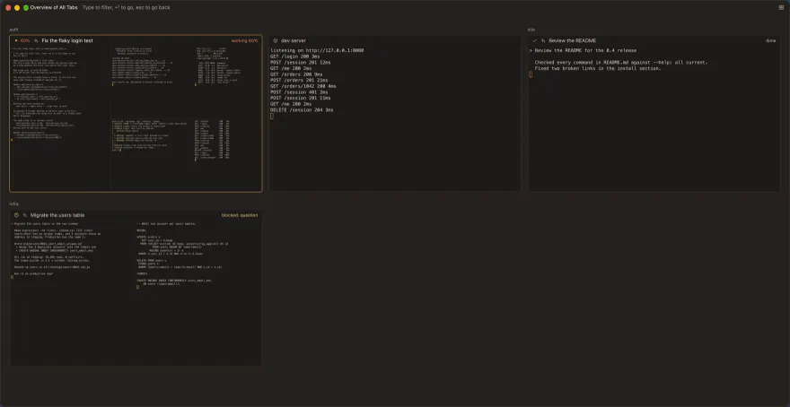

Skip to content
Docs

The app
Sessions, tabs, splits and the sidebar
The command
Open panes, type into them, read and wait
Agents
The skill, status reports and the inbox
What's new
Demo
GitHub
Install leon